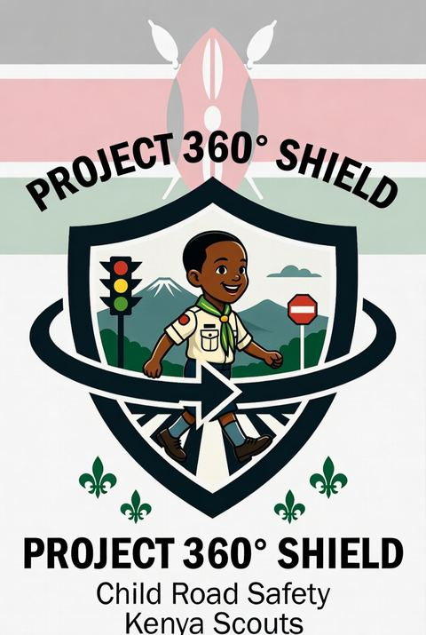

We have sent a system-generated 4-digit code and a copy of your saved account information to your email. Please enter the code below to verify your account.
Create your account and verify your email via safestepske@gmail.com to securely back up your road safety badges, checklists, and whistleblower logs.
⚪ Checking account status…
🔐 Create Your SafeSteps Account
Enter your full name, email address, and password below. Upon submission, our system will generate a secure 4-digit code and send it right to your email from safestepske@gmail.com.
🛡️ Security CAPTCHA Check:8 + 3 = ?
✉️ Verification of the Email
We have sent a system-generated 4-digit code and a copy of your saved account information to your email from safestepske@gmail.com. Please enter the 4-digit code below to verify your account.
D
David Kamaudavid.kamau@gmail.com✅ Email Verified by safestepske@gmail.com
All verification codes, saved account profile reports, and whistleblower receipts are generated directly by safestepske@gmail.com and sent to the user's registered email address.
Quick Start Scout MissionComplete 3 quick wins to claim your 'Road Safety Pioneer' badge!
⚪
1. Take the Road Safety PledgePromise safe crossings & helmet use (+50 pts)
Start →
⚪
2. Answer 1 Quick Quiz QuestionTest your knowledge on NTSA rules (+50 pts)
Start →
⚪
3. Check Your Daily Route SafetyPlan safest path around blackspots (+50 pts)
Start →
⚡ Primary Safety & Integrity ToolsCore 10 Modules
📖Learn
🎬Safety Videos
⚖️Road Rights
🔐Account
❓Quiz
🪧Road Signs
📷Sign Scanner
⚠️Report Hazard
🛡️Report Corruption
📋Safety Program
🗺️Hazard Map
🛡️
Practical Road Safety, For Everyone
Lessons, checklists and tools for pedestrians, commuters, riders and families.
More Safety Guides
🚌Bus Safety
▾
🛵Boda Boda Safety
▾
🚐Matatu Safety
▾
🌙Night & Weekend Safety
▾
🎒School & Child Safety
▾
🛡️ The Road Safety Pledge
"I promise to always look both ways before crossing, wear my helmet when cycling, keep my seatbelt on in the car, and help keep my community safe on the roads."
Pick a topic to practice, or take a mixed quiz across all categories.
Question 1 of 8
🏆 0
🚌
Bus Safety Checklist
Tick each rule as you follow it — earn points when you tick them all!
Progress0/14
ℹ️ Complete this checklist every time you use public transport to keep yourself and others safe.
💡 Did You Know?
The space right in front of, behind, or beside a bus is a driver's blind spot — a child standing there cannot be seen.
Most injuries happen while boarding or alighting, not while the bus is moving — take your time at the door.
A seatbelt only protects you if it's buckled before the vehicle moves, not after.
🛵
Boda Boda Safety
Tick each rule as you follow it — earn points when you tick them all!
Progress0/15
💡 Did You Know?
A properly fastened helmet is the single biggest protection you have on a boda boda — for rider AND passenger, every trip.
Current NTSA rules limit a boda boda to one passenger, and riders must be registered with a licensed SACCO or company.
Safe riders slow right down to walking pace near schools and groups of children.
Safe riders keep their headlight on even during the day so you and they are easier to see.
If a rider revs the engine or rides recklessly near people, it's okay to ask them to slow down or get off at the next safe spot.
🚐
Matatu Safety
Tick each rule as you follow it — earn points when you tick them all!
Progress0/12
💡 Did You Know?
A licensed matatu has a set seating capacity for a reason — overloading makes it harder to control and slower to stop.
Pedestrians make up roughly 4 in 10 road deaths in Kenya — many happen crossing near a matatu "stage".
You're allowed to refuse to board, or to ask to alight, if a vehicle feels unsafe — that's not rude, it's sensible.
🌙
Night & Weekend Safety
Crashes spike on Friday–Sunday evenings — a few habits make a big difference.
Progress0/8
💡 Did You Know?
Kenya's National Road Safety Action Plan flags Friday to Sunday evenings as the deadliest window on the roads.
Dark, non-reflective clothing can make a pedestrian invisible to a driver until it's too late to stop.
Fatigue affects judgement almost like alcohol does — tired drivers and pedestrians both react more slowly.
🎒
School & Child Safety
For pupils, parents, and teachers — building safe habits on the school run.
Progress0/8
💡 Did You Know?
NTSA guidelines require vehicles used for school transport to be inspected and fitted with a speed governor.
A child's smaller size and unpredictable movement make them harder for drivers to spot — bright uniforms and bags help.
Most child pedestrian crashes near schools happen at unmarked crossing points, not at zebra crossings.
What kind of hazard?
Describe it (optional)
Add a photo (optional)
ℹ️ NTSA's report form isn't connected to apps, so this shares your photo/details to your phone (or opens the NTSA site directly) — then you paste them into the official form that opens.
✅ Report saved. Want to see it on the community hazard map?
⚡ Near-Miss Log
ℹ️ A "near-miss" is a moment that almost became an accident. Logging these — quickly, with no details needed — helps spot patterns before something worse happens.
✅ Near-miss logged. See hotspots on the hazard map?
🛡️
Integrity Whistleblower
Direct Multi-Agency Dispatch Gateway
Report corrupt road traffic police officers, NTSA enforcement officials, or emergency ambulance crews demanding illegal bribes or abandoning public duty. Evidence is posted instantly to the community feed below and transmitted directly to official oversight email systems.
🔒 EACC (report@eacc.go.ke)🚔 Kenya Police (complaints@kenyapolice.go.ke)🚗 NTSA (integrity@ntsa.go.ke)
💡Tip: If you encounter an immediate physical security threat, tap the 🆘 Emergency SOS icon on the home screen to alert your trusted contact & emergency responders.
1. Select Corrupt Entity / Agency
👮♂️Police TrafficRoadside extortion
🚗NTSA OfficialInspection bribery
🚑Ambulance CrewFee demand / delay
2. Location & Officer details
3. Detailed Incident Description
4. Digital Evidence (Pictures, Video, or Live Recording)
5. Whistleblower Anonymity & Dispatch Options
Submit Anonymously (Whistleblower Protection)Redacts your name & phone from public community display while maintaining secure agency timestamp
📢 Public Whistleblower Evidence Feed
Showing all reports
📸 Snap a photo or short video of unsafe or illegal road behaviour — jumping lights, no helmet, reckless overtaking — and share it with your local Scouts community. Posts stay offline and securely stored on this device.
What did you see?
📢 Community Feed
⚠️
Road Signs
Tap any sign to learn what it means and why it matters.
📷
Smart Sign Scanner
Point camera, upload photo, or tap sample signs for instant local Kenyan language translation & audio.
ℹ️ Fully integrated with Road Safety Quizzes, Daily Route Checklists, and NTSA Hazard Reporting. Supports real-time audio across English, Kiswahili, Gĩkũyū, Dholuo, Kalenjin, Kikamba, and Sheng!
👓 AR LIVE HUD: STOP Sign98% ML Match
Stop completely at the line. Check left, right, and forward.
🪧Point device camera or upload any road sign photo below to classify & translate into local Kenyan languages.
Tap any sign below to immediately view its translation in local Kenyan languages, listen to spoken audio, or launch a practice quiz challenge right now:
🛑STOP Sign
🔻Give Way
🚸Zebra Crossing
5️⃣0️⃣Speed Limit 50
🏫School Zone
〰️Speed Bump
⚠️
Emergency SOS
If you or someone is in danger — call for help immediately.
Several hospitals per county are listed so more sub-counties have a nearby number. Direct lines aren't all centrally published — where unconfirmed, the call button routes to Red Cross 1199, which dispatches everywhere. If you know a correct local number that's missing, it's worth telling your school or county health office so it gets published.
What to Do in an Emergency
1
Stay Calm
Take a breath. Panicking makes it harder to help.
2
Move to Safety
Get yourself and others away from danger if you can.
3
Call for Help
Dial 112 or 999. Give your exact location and what happened.
4
Do Not Move Injured People
Unless there is immediate danger, wait for trained help.
5
Stay with the Person
Keep them calm and reassured until help arrives.
🩹 Basic First Aid Reminder
If someone is unconscious — check if they are breathing.
If not breathing — begin CPR if you are trained.
If bleeding heavily — apply firm pressure with a clean cloth.
If a bone may be broken — keep the person still and warm.
Never give food or water to an unconscious person.
More tools to help you and your community stay safe.
🧑
Newcomer0 points · 0/7 badges
Online
💡 Tip of the Day
📍 Your County
🧭 Quick Check-In
How are you feeling about this trip right now?
🔥0-day streak0%
Level: Newcomer
🏁 Challenges
🔔 Reminders
Get a daily tip or streak reminder when you open SafeSteps. This app has no server, so reminders fire on-device when you open the app (or while it's left open) — not while it's fully closed.
Daily reminder
📡 Push Alerts (beta)
Lets your device receive alerts pushed from a county/troop-run backend (e.g. a new blackspot near you) — even when SafeSteps isn't open. This is separate from the on-device Daily Reminder above and only works once a school, county, or Scout troop sets up their own free push backend and adds its key to the app.
Enable push alerts
🎙️ Voice Commands
Say things like "open quiz" or "show map" to navigate hands-free
Enable voice commands
Tell us about a journey you take often, and get a short, relevant safety checklist for it — no internet routing needed.
How do you make this journey?
When do you usually travel?
📍 Plan a Route (offline)
Point-to-point routing between known Embu landmarks — works with zero internet connection. This is a small sample map, not full street coverage yet; see Settings → About for details.
A transparent log of what's changed in SafeSteps recently.
Type or tap a question, or just say hi. This works fully offline — answers are drawn from the Kenya Scouts Association's driver and rider training material plus published Kenya road-safety data, not a live AI, so it can only help with what's built in here.
🗺️
Live Google Maps Engine
🟢 Real-Time Online Feed Active — Zoom to 1-Block Street Level
💥 Live Accidents Feed🌦️ Live Weather Radar [Verified: KMD + WMO + Open-Meteo]
🛰️
Map Tile Layer:Google Satellite Hybrid (Aerial + Street Names)
💥Live Accidents
🌦️Live Weather
🛡️NTSA Hotspots
🚨Whistleblower
🚧Traffic Jams
🗺️All Combined
🎯 Filter Advisories
Victim type (KNBS/NTSA category)
Region / County
👇 Tap any point on the map to log a blackspot there (pothole, dead traffic light, unlit stretch, or recent accident).
💥 Live accident (Real-time)🌦️ Weather hazard (Radar)🔴 NTSA High-risk🚨 Whistleblower Checkpoint🟠 Community Report
🛡️ Live traffic collisions, weather alerts, and verified NTSA hotspots show across the entire highway map. Tap any marker and click 'Zoom to 1-Block' for street inspection.
Loading hotspot & real-time data…
Known Hazard Hotspots & Live Incidents
Community Hazard Heatmap
📊 Built from anonymous hazard reports submitted and stored offline on this device. Areas with more reports show a bigger marker.
ℹ️ Every video module includes human-voiced audio narration (.mp3), bilingual English & Kiswahili subtitles, and low-bandwidth animated storyboards so they load instantly offline on any phone!
Core Safety ShortHow to Cross Near a Matatu Stage
Slide 1 of 4 • 0:00🔊 Spoken MP3 Audio Active
1. Beware of Blind Spots: Never step out from directly behind a stopped Matatu at the stage.
⏸️ INTERACTIVE DECISION CHECKPOINT:
An overloaded matatu with loud music pulls up. The conductor tells you to squeeze in. What do you do?
🎬 All Videos (24)
⚡ Safety Shorts (10)
🩹 First Aid Guides (5)
📖 Scout Stories & Scenarios (5)
🛠️ How-To & Tutorials (4)
⚖️
Road Rights & Regulations
Authoritative guide on Kenya Traffic Acts, NTSA laws, and civic rights across all road users.
ℹ️ Know your legal rights and mandatory safety duties. Categorized specifically for Children, Boda Boda Riders, Pedestrians, and Motorist Drivers. Works fully offline!
📜 Official Statutory Instant Traffic Fines (`Schedule 8`)Exact legal government fines for minor traffic infractions — Know these numbers to prevent roadside extortion
Exceeding Speed by 1–5 km/h:KSh 500 (`Notice to Attend Court`)
Exceeding Speed by 6–10 km/h:KSh 3,000 (`Statutory Instant Fine`)
Exceeding Speed by 11–15 km/h:KSh 6,000 (`Statutory Instant Fine`)
Exceeding Speed by 16–20 km/h:KSh 10,000 (`Statutory Instant Fine`)
Failure to Wear Seatbelt (`Sec 22A`):KSh 500 per unbuckled occupant
No Boda Helmet or Vest (`Sec 103B`):KSh 1,000 against rider & pillion
Obstruction / Yellow Line (`Sec 83`):KSh 10,000 or NTSA summons
⚠️ Legal Note: If an officer demands cash exceeding these statutory schedule fines without issuing an official NTSA fine notification or court appearance summons, report the incident immediately via the Whistleblower portal (`#page-integrity`).
📚 All Categories (24)
👶🏽 Child Rights (6)
🏍️ Boda Boda Riders (6)
🚶🏾♀️ Pedestrian Rights (6)
🚘 Driver Rights (6)
Short narrated safety stories — useful for younger listeners or anyone who prefers listening. Uses your device's built-in voice, no download needed.
Listen to Any Lesson
🔊 Every lesson in the Learn tab also has a "Listen" button.
Common road-safety phrases in English and Kiswahili — handy for explaining a hazard, asking for help, or teaching someone the words. Works fully offline; tap 🔊 to hear either language.
Set Conditions Manually
Auto (by date)
☀️ Sunny
🌧️ Rainy
🌫️ Foggy/Low light
Safety Tips for These Conditions
Track road safety readiness for a group — a school club, patrol, or family — on one shared device.
Group Name
Members
Group Leaderboard (enter each member's quiz score out of 100)
Group Safety Checklist
🏥
First Aid Trauma Center
Rapid 60-Second Emergency Protocols & Interactive First Responder Training
🚨 Rapid 60-Second Emergency Field ProtocolsInstant life-saving action checklist for highway collision & trauma scenes
1. 🩸 Severe Bleeding Control (`Direct Pressure Protocol`)
Place clean cloth directly over wound and apply maximum downward two-hand pressure. Do not lift cloth to check clotting; if blood soaks through, stack additional cloths directly on top and maintain continuous pressure until paramedics arrive.
2. 🫀 CPR & Unresponsive Victims (`100–120 Chest Compressions/min`)
If unconscious and not breathing, place victim flat on rigid tarmac. Interlock hands in center of chest and compress 5 cm deep at a rate of 100–120 beats per minute (`to the rhythm of 'Stayin Alive'`). Do not stop until automated defibrillator (`AED`) or ambulance arrives.
3. 🦴 Spinal & Neck Trauma Protection (`Zero-Movement Rule`)
If a victim has fallen from a motorcycle or been ejected from a vehicle, assume cervical spine fractures. Never twist their neck or pull them upright, as movement cuts spinal cord and causes irreversible quadriplegia. Keep head stabilized in neutral alignment between your forearms.
4. 🔥 Road Burns & Radiator Scalds (`Cool Water Protocol`)
For engine radiator steam scalds or fuel fires, immediately flush burned skin with clean running cool water for at least 15 minutes. Never apply butter, toothpaste, raw eggs, or ice, as these trap deep dermal heat and introduce severe bacterial infection.
5. ⚡ Shock Prevention & Recovery Position (`Side Alignment`)
If unconscious but breathing normally, roll victim gently onto their left side (`Recovery Position`) to prevent choking on saliva or vomit. Keep them warm with jackets/blankets and elevate feet slightly if no leg/spine fractures are present.
📋 Interactive First Aid Diagnostic Scenarios
Step-by-step decision simulations across 8 critical trauma categories. Practice making the right life-saving choices under pressure.
🎖️
Scout Corner
Project 360° Shield — Embu County Scouts
The Scout Promise
On my honour, I promise that I will do my best — to do my duty to God and my country, to help other people at all times, and to keep the Scout Law.
Patrol Challenges
Scout Badges
Success Stories
Illustrative examples of Scouts putting these skills into practice.
Appearance
Theme
📱 System
☀️ Light
🌙 Dark
🌆 Auto (Night)
Auto (Night) switches to the high-contrast dark theme after dusk and back to light at dawn — to cut glare while walking or riding at night.
Language / Lugha / Rũthiomi / Ng'aleek / Français
English
Kiswahili
Français
Gĩkũyū
Dholuo
Kalenjin
Kikamba
Sheng
Luhya
Kĩmĩĩrũ
Ekegusii
Kigiriama
Soomaali
Kĩembu
Ng'aturkwell
Igikuria
Kidawida
Ng'apokot
Samburu
Borana
Orma
Maa (Maasai)
Kipokomo
Rendille
Gabra
Kibajuni
Kiduruma
Chidigo
Kirabai
Llogoli
Lubukusu
Olushisa
Olunyore
Olutsotso
Olutachoni
Olukabarasi
Olusabaot
Marakwet
Tugen
Keiyo
Nandi
Kipsigis
Sengwer
Terik
Kĩmbeere
Kĩtharaka
Kĩchuka
Olusuba
El Molo
Ogiek
Yaaku
Daasanach
Waata
Your County — personalizes the home-screen safety tip
Text Size
A
A
A
High Contrast
Stronger colors and borders for easier reading
Simplified View
Bigger buttons, less clutter — good for younger users
Colorblind-Safe Mode
Adds text labels and shapes so hazard severity never relies on color alone
🗣️ Low-Literacy / Audio First Mode
Larger icons, simplified wording, and auto-voice narration across all text
📳 Disability Haptic Support
Vibrates device on checklist completion & hazard confirmation
📍 Proximity Hazard Alerts (Geo-Fencing)
Watches your location in the background while the app is open and raises a local alert — with an optional spoken warning — when you get close to a known accident blackspot or a busy congestion area. Uses the device GPS only; nothing is uploaded.
Select your exact County to load localized road safety blackspots, rural livestock corridors, and community heatmaps specifically for your region.
🛠️ Testing, Latency & Telemetry Hub
For QA testers, IT administrators, and accessibility auditors
🐌 Simulate Low-Bandwidth / High-Latency (2G)Injects 2.5s network delay to test loading states & offline queues
📊 Anonymous App Telemetry Opt-InHelps Kenya Scouts improve road safety features (Zero PII collected)
Your Profile
Personalizes tips, quiz difficulty and daily goals
Age group
General / Adult
Teen (11–17)
Child (7–10)
School or organisation (optional)
Daily goal
Light
Regular
Committed
Trusted Contact
Used by the SOS button to quickly share your location
Medical Info
Shown to first responders if needed
Your Data
Download your progress, checklists, and reports as a file — handy for parents or teachers
Feedback
Tell us what's working, what's confusing, or what to add next.
👪 Family Profiles
Share this device between family members — each person keeps their own lessons, quiz scores, streak, and reports. Switch anytime; nothing is deleted.
🔄 Sync Across Devices
There's no SafeSteps server — sync works by moving a share code directly between devices, by QR or by copy/paste. Nothing passes through the internet.
Send a profile
Receive a profile
Parent & Teacher Portal
A PIN-protected view of progress, quiz scores, checklists and reports — plus a printable PDF summary
Install SafeSteps
Add SafeSteps to your home screen for one-tap, offline access
App Updates
SafeSteps — offline-first PWA
About

About SafeSteps
SafeSteps is a free, offline-first road safety app for pedestrians, matatu and bus passengers, boda boda riders and passengers, families, and school communities alike.
It began as part of Project 360° Shield, a child road safety initiative by the Embu County Scouts, and has grown into a tool for the whole community — equipping anyone who walks, rides, or commutes with practical skills, awareness, and technology to navigate Kenya's roads more safely.
Our Mission
Through lessons, quizzes, interactive checklists, road sign explanations, hazard reporting, near-miss logging, and one-tap emergency SOS features, SafeSteps turns road safety education into a practical, engaging habit — usable by anyone, anytime, even offline.
By combining the values of preparedness, responsibility, and community service with modern technology, SafeSteps and Project 360° Shield aim to reduce road accidents and build a safer Kenya, one informed road user at a time.
Stay safe. Stay aware. Look out for each other.
🔄 Replay onboarding tutorial
Enter Portal PIN
Enter your 4-digit PIN to view progress reports.
Viewing
Progress Summary
Level—
Total points—
Badges earned—
Current streak—
Lessons completed—
Pledge taken—
Quiz Scores by Topic
Checklist Completion
Hazard & Near-Miss Reports
Hazards reported—
Near-misses logged—
Export
Download a printable PDF, or a CSV for spreadsheets and school reports
This screen tracks the integrated requirements from the Road-Safety-App-SRS.md (v1.0, 8 Aug 2026): Fleet Manager inspections & training (FM-1 to FM-3), Teen/Personal Driver controls (TD-1 to TD-4), Insurance & Audit (IT-1 to IT-3), and Privacy / Compliance controls (RC-1..RC-14). All Must-level items are referenced or implemented within SafeSteps; full device-level enforcement requires deployment-specific hardware and legal configuration.
Edit this checklist to track your own pre-trip/post-trip inspection plan. Changes are saved locally.
Plan saved locally.
Teen / Personal Driver (TD-1..TD-4)
Insurance & Audit (IT-1 / IT-2 / IT-3)
📊 Interactive tier comparison table (FM/TD/IT/RC with priority, status, citation IDs, confidence labels) available above.
Privacy & Compliance (RC)
Verification strategy (SRS §5): Unit/contract, integration/resilience (disconnect/replay/consent/duplicate), field drives, crash validation (sled/controlled), privacy/security gates (DPIA / LIA / model-card / fairness), red-team (GPS spoof, replay, device separation, account takeover), and a go-live checklist. Not solved in-app (see citations below). Interactive tier comparison table (FM vs TD vs IT vs RC) with priority/status/confidence/citation columns available in SRS section. [1][2][3][4][5][6][7][8]: Interactive tier comparison table available in the SRS section (FM/TD/IT/RC with priority/status/confidence/citation columns). Real-world EmailJS delivery requires an active service account (production key baked in); live weather depends on signal; full device-level enforcement (e.g. crash sled validation, biometric release) is outside mobile-only PWA scope.
🧭 SafeSteps Action HubQuick access across all 24 road safety & integrity modules
🔐 Account & Integrity Security
🔐Account Hub
🛡️Whistleblower
⚖️Road Rights
❓ Quizzes & AI Recognition
❓Quiz Challenge
🪧Road Signs
📷Sign Scanner
🎬Safety Videos
⚠️ Reporting & Hazards
⚠️Report Hazard
📸Violation Feed
🧭Route Safety
🚌 Vehicle & Commuter Guides
🚌Bus Safety
🛵Boda Boda
🚐Matatu Guide
🎒 Daily & Community Modules
🌙Night Travel
🎒School Run
🌦️Weather Tips
🎧Audio Stories
💬Phrasebook
👥Buddy Mode
🩹First Aid
🎖️Scout Corner
🔒Parent Portal
🆕What's New
🤖Ask SafeSteps
⚙️Settings
🔄 A new version of SafeSteps is ready.
📧
System Email DispatchedGateway: SafeSteps System Engine
From:SafeSteps Kenya System <safestepske@gmail.com>
To:user@gmail.com
Subject:Welcome to SafeSteps Kenya — Google Account Linked!
Timestamp:Just now
System Email Content:
📥 Dispatched Email Notifications LogAll system alerts generated by safestepske@gmail.com
⚠️
Multi-Device Sync Conflict DetectedBidirectional QR / JSON Profile Merge
We detected differing lesson progress and quiz scores between your local device and the incoming profile.
📱 Local Device Profile:14 lessons completed
📥 Incoming QR Profile:18 lessons completed
⚖️ Terms & Legal DisclaimersSafeSteps Kenya · Project 360° Shield
1. Educational Awareness Only SafeSteps is an educational road safety and civic awareness companion developed in collaboration with Kenya Scouts Association (Project 360° Shield). The content, rules, and guidelines provided within this application are intended solely to foster general public safety and child road awareness.
2. Not a Substitute for Official Regulations This app does not replace official National Transport and Safety Authority (NTSA) traffic acts, formal driving instruction, or certified medical/first-aid training. Users must always comply with gazetted Kenya Traffic Acts and official enforcement officers.
3. Emergency Services & SOS The Emergency SOS feature provides one-tap telephone links (`112` / `999`) and SMS/location sharing with personal trusted contacts. SafeSteps does not run a private 24/7 dispatch monitoring center; emergency calls connect directly to Kenya National Police and Ambulance command centers.
4. Whistleblower & Anti-Corruption Integrity Reports submitted via the Integrity Whistleblower portal (`#page-integrity`) are encrypted locally on your device and transmitted via standard email protocols to designated government agency desks (`report@eacc.go.ke`, `complaints@kenyapolice.go.ke`, `integrity@ntsa.go.ke`). SafeSteps guarantees strict client-side identity shielding when the anonymous toggle is selected.